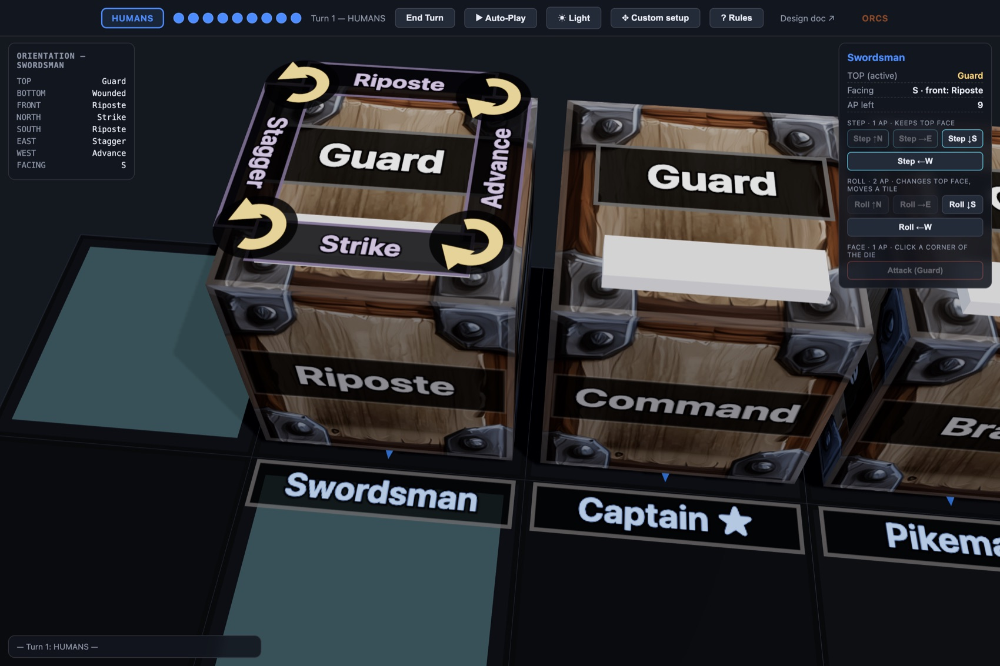
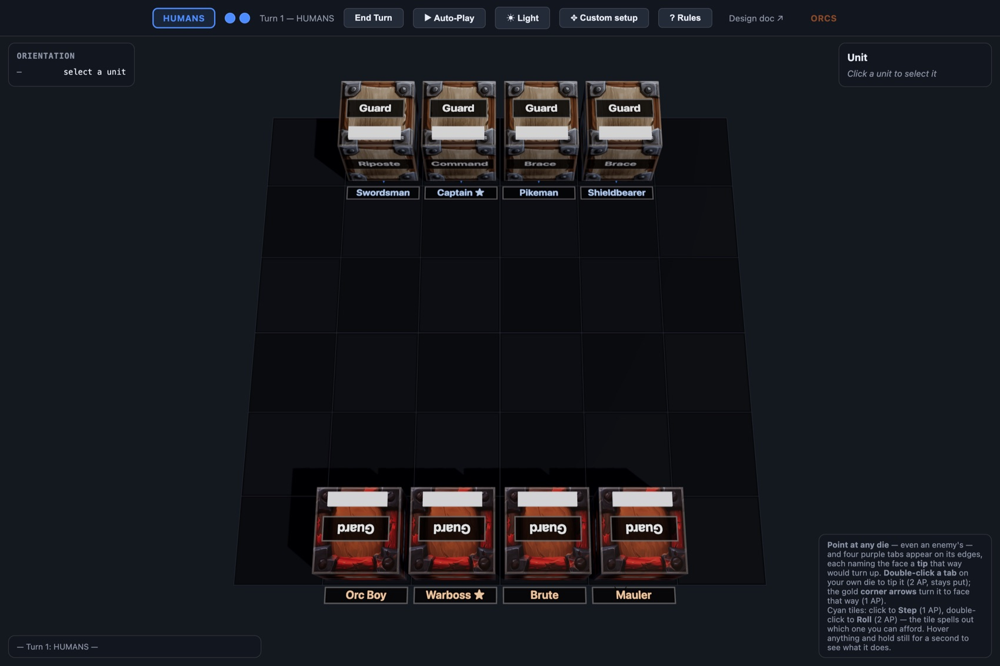

Frakcja to inny zestaw kości
Ludzie trzymają formację. Orkowie prą naprzód. Gobliny zalewają planszę i giną od jednego ciosu. Elfy są szybkie i kruche. Nie zmienia się kolor — zmienia się układ ścianek, a z nim reguły, które ta armia wnosi do gry.
Wysypujesz garść kości na arenę. To jest cała twoja armia. Ścianka, która leży na wierzchu, jest rozkazem — a każda frakcja ma własny układ ścianek, czyli własną mechanikę.

Bez kart. Bez żetonów. Bez liczników ran.
Garść kości i plansza.
Każda kość to jedna jednostka. Sześć ścianek to sześć rzeczy, które ta jednostka potrafi — cios, zasłona, szarża, rozkaz. Ta, która leży na wierzchu, obowiązuje teraz. Przewracasz kość i jednostka dosłownie zmienia to, czym jest.
Rana nie jest żetonem — jest obrotem kości. Śmierć nie jest skreśleniem na kartce — kość znika z planszy. Cały stan bitwy widzisz jednym spojrzeniem na stół, bo nie ma go nigdzie indziej.
Ludzie trzymają formację. Orkowie prą naprzód. Gobliny zalewają planszę i giną od jednego ciosu. Elfy są szybkie i kruche. Nie zmienia się kolor — zmienia się układ ścianek, a z nim reguły, które ta armia wnosi do gry.
Docelowo: kolorowe kości wysokiej jakości, grawerowane i zadrukowane, oraz arena z wyraźnym gridem. Kość jest ładna sama w sobie i jednocześnie jest całą zasadą jednostki — nie ma osobnej karty, którą trzeba do niej dołożyć.
Wybierasz, które kości bierzesz na stół i jak je ustawiasz. Dwie armie tej samej frakcji mogą grać zupełnie inaczej, bo liczy się nie tylko co masz, ale co sąsiaduje z czym na każdej z twoich kości.
Ten sam zestaw kości obsługuje potyczkę dwóch jednostek i bitwę na dwadzieścia. Docelowo — kilka wariantów rozgrywki na tym samym pudełku, na wzór formatów w grach karcianych: szybki pojedynek, pełna bitwa, tryb z celami na planszy.
Zasady mieszczą się na kartce. Decyzje — nie.
To jest ta gra, którą tłumaczysz komuś w dwie minuty,
a potem gracie do drugiej w nocy.
Twoja tura to dwa punkty akcji na całą armię. Nie na jednostkę — na armię. I to jest cały ciężar decyzji.
| Akcja | Koszt | Co robi |
|---|---|---|
| Krok | 1 PA | Jedno pole w dowolną stronę. Kość się nie przewraca — zachowujesz to, co masz na wierzchu. |
| Przetoczenie | 2 PA | Jedno pole w dowolną stronę, ale kość się przewraca — na wierzch wchodzi inna ścianka. |
| Obrót w miejscu | 2 PA | Zostajesz na polu i przewracasz kość. Jedyny sposób, żeby zmienić rozkaz, stojąc oko w oko z wrogiem. |
| Zwrot | 1 PA | Zmieniasz kierunek, w który jednostka patrzy. Ścianka bez zmian. |
| Atak | 1 PA | Tylko jeśli na wierzchu masz ściankę ataku. Bijesz prosto przed siebie. |
Tu jest sedno: ruszyć się i zachować swój rozkaz jest tanie. Zmienić rozkaz — kosztuje całą turę. Cały czas wybierasz między tempem a gotowością: podejść bliżej teraz i uderzyć za dwie tury, czy uzbroić się już i pozwolić przeciwnikowi wybrać moment.
Przewracając kość w jedną stronę odwiedzasz tylko cztery z sześciu ścianek — dwie pozostałe są poza zasięgiem, dopóki nie przewrócisz jej w bok. To znaczy, że to, co z czym sąsiaduje, decyduje o tym, jakie sekwencje są w ogóle możliwe. Miecznik, u którego cios leży obok szarży, gra zupełnie inaczej niż taki, u którego cios leży naprzeciw — przy identycznych ściankach.
To jest mechanizm, na którym stoi cały pomysł na frakcje. Projektując nową armię nie dokładamy nowych zasad — przekładamy ścianki na kości.
Trafiona jednostka zostaje przewrócona: najpierw traci zasłonę, potem zostaje ranna, potem schodzi z planszy. Od frontu wytrzymuje trzy ciosy, z boku dwa — ustawienie jednostki naprawdę ma znaczenie. Bitwę wygrywa ten, kto pokona dowódcę przeciwnika.
To jest teza produktu. Kupując armię, kupujesz inną maszynę, a nie skórkę — i to jest odpowiedź na pytanie, po co komu drugi zestaw kości.
Dwie pierwsze frakcje są zaprojektowane i grywalne. Reszta to kierunki — każdy z nich łamie inny element rdzenia, ale nie wymaga nowego rulebooka, bo mieści się w tych samych pięciu akcjach.
| Frakcja | Co wnosi do gry |
|---|---|
| Ludziegrywalne | Formacja i reakcja. Nagradzają wzajemne wsparcie i karzą tego, kto wyjdzie przed szereg. |
| Orkowiegrywalne | Napór. Atakują także bokiem, więc grożą zawsze — nie da się ich bezpiecznie wyminąć. |
| Goblinyszkic | Rój. Najtańsze kości w grze, giną od pierwszego trafienia, ale jest ich dużo i mają po dwie ścianki ruchu. |
| Elfyszkic | Szybkie i kruche. Tanie przetoczenia, więc zmieniają rozkaz bez utraty tempa — ale padają od dwóch ciosów. |
| Krasnoludyszkic | Mur. Nie da się ich odepchnąć, a zasłona działa też z boku. Trzeba je obejść, nie przewrócić. |
| Nieumarliszkic | Brak ścianki rany. Trafione znikają na turę i wracają — zabicie ich wymaga zupełnie innego rytmu. |
| Ogryszkic | Jedna kość zajmuje cztery pola. Cztery ścianki zamiast sześciu, każdy atak odpycha. |
Kierunków rozwoju jest więcej niż jeden: kolejne frakcje, budowanie własnych armii z dostępnych kości, a docelowo także alternatywne warianty rdzenia — inne warunki zwycięstwa, inne areny, inne pule akcji. Ta sama półka z kośćmi obsługuje kilka różnych gier.
Działający prototyp w przeglądarce — bez instalowania czegokolwiek. Pełna partia od ustawienia armii do zwycięstwa, komputer potrafi zagrać obiema stronami.
Świadomie mały zakres. Prototyp testuje cztery kości na stronę na planszy 6×6. To jest laboratorium rdzenia, nie docelowa gra: chodziło o to, żeby sprawdzić, czy przewracanie kości daje sensowne decyzje, przy jak najmniejszej liczbie ruchomych części. Docelowa arena to 7×7 lub 8×8 i wyraźnie większe armie — dopiero na tej skali formacja i obchodzenie skrzydłem zaczynają naprawdę znaczyć.

Każdy wariant zasad przeszedł przez tysiące symulowanych partii i był oceniany po tym, czy gra się kończy i czy po drodze coś się dzieje:
W grze nie ma losowości poza decyzjami graczy — kością się nie rzuca, kość się przewraca. Dzięki temu wersja cyfrowa i planszowa liczą dokładnie to samo i nie rozjadą się przy rozwoju.
Wiemy, że ta gra działa i że się kończy. Nie wiemy, czy jest przyjemna.
Wszystkie dotychczasowe rozstrzygnięcia opierają się na partiach komputera przeciwko komputerowi. To świetny wykrywacz zakleszczeń — realnie wyłapał ich pięć — ale kiepski miernik frajdy. Nikt jeszcze nie przegrał tej gry i się przy tym nie zirytował.
Zmiana rozkazu w kontakcie z wrogiem kosztuje całą turę. To sedno napięcia w tej grze — albo najbardziej irytująca rzecz w niej. Tego nie rozstrzygnie żadna symulacja.
Część efektów odpala się sama, a gracz widzi tylko wynik. Możliwe, że to szum, który należy uprościć.
Trzy trafienia od frontu, dwa z boku — narysowane na sześcianie zamiast na karcie. Uczciwie: to była zamiana, nie ulepszenie. Bez niej gra się nie kończyła, ale warto o tym wiedzieć.
O co pytam: czy po zagraniu kilku tur widzisz tu grę, w którą chciałbyś zagrać drugi raz — i czy zwarcie czyta się jako napięcie, czy jako przeszkoda. Reszta jest do policzenia; to nie.
Zagraj w prototyp piotrek1115.github.io/sixth-face
Pełna dokumentacja: github.com/piotrek1115/sixth-face